信息系统与信息化
信息质量属性（掌握）
- 准确性：对事物状态描述的精准程度。
- 完整性：对事物状态描述的全面程度，完整信息应包括所有重要事实。
- 可靠性：指信息的来源、采集方法、传输过程是可信的，符合预期。
- 及时性：指获得信息的时刻与实践发生时刻的间隔长短。
- 经济性：指信息获取、传输带来的成本在可以接收的范围之类。
- 可验证性：指信息的主要质量属性可以被证实或者证伪的程度。
- 安全性：指在信息的生命周期中，信息可以被非授权访问的可能性，可能性越低，安全性越高。
信息传输模型（了解）
信息是有价值的一种客观存在。信息技术主要是为了解决信息的采集、加工、存储、传输、计算、转换、表现等问题而不断的繁荣发展。信息只有流动起来，才能体现其价值。
信息的传输技术（通常指通信、网络等）是信息技术的核心。
信息的传输模型如图所示：
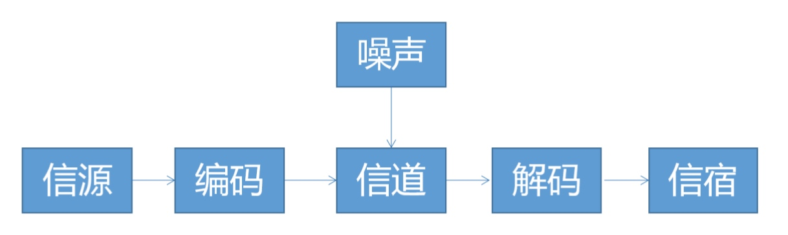
- 信源：产生信息的实体，信息产生后，由这个实体向外传播。如QQ使用者
- 信宿：信息的归宿或者接收者。
- 信道：传输信息的通道，如TCP/IP网络。
- 编码器：对编码信息进行加密再编码，如量化器，压缩编码器，调制器等。
- 译码器：把信道上送来的信号（原始信息与噪声的叠加）转换成信宿能接受的信号，可包括解调器、译码器数模转换器等。
- 噪声：可以理解为干扰，干扰可以来自于信息系统分层结构的任何一层，当噪声携带的信息大到一定程度的时候，在信道中传输的信息可以被噪声掩盖导致传输失败。
信息化的五个层次（掌握）
信息化从“小”到“大”分为五个层次：
- 产品信息化：是信息化的基础
- 企业信息化：是指企业在产品设计、开发、生产、管理、经营等多个环境中广泛应用信息技术。如：生产制造信息、ERP、CRM、SCM等
- 产业信息化
- 国民经济信息化
- 社会生活信息化：如智慧城市、互联网金融
信息化（了解）
信息化的：
-- 主体：全体社会成员，包括政府、企业事业、团体和个人
-- 手段：基于现代信息技术的先进社会生产工具
-- 途经：创建信息时代的社会生产力，推动社会生产关系及社会上层建筑的改革
-- 目标：是国家的综合实力，社会的文明素质和人民的生活质量全面提升
两网、一站、四库、十二金（了解）
- 两站：政务内网和政务外网
- 一站：政府门户网站
- 四库：建立人口、法人单位、空间地理和自然资源、宏观经济等四个技术数据库
- 十二金：则是要重点推进办公业务资源系统等十二个业务系统。金宏工程、金税工程、金关工程、金财工程、金融监管工程、金卡工程、金审工程、金盾工程、金保工程、金农工程、金水工程、金质工程
信息化体系六要素（掌握）
上应下技左人右规 核心任务 基础设施
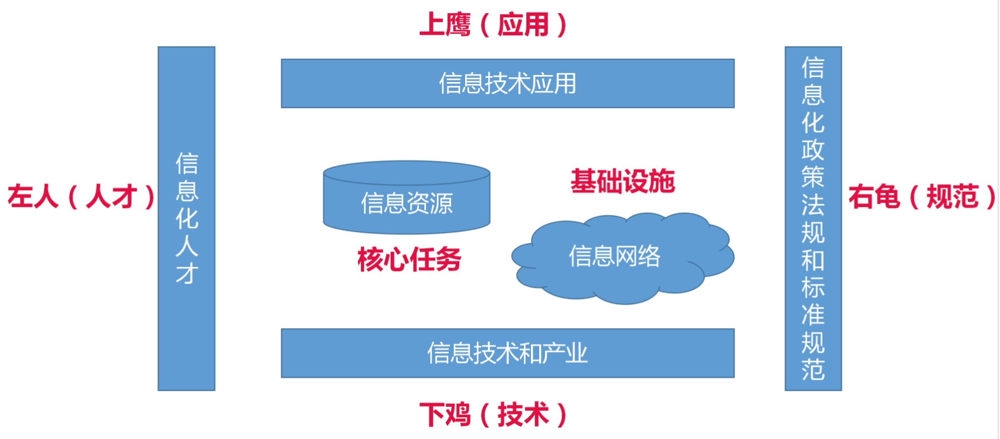
- 信息资源，信息资源的开发和利用是国家信息化的核心任务
- 信息网络，信息网络是信息资源开发和利用的基础设施
- 信息应用技术，信息技术应用是信息化体系六要素中的龙头，是国家信息化建设的主阵地
- 信息技术与产业，是信息化的物质基础
- 信息化人才，人才是信息化的成功之本
- 信息化政策法规和标准规范，信息化政策和法规、标准、规范用于规范和协调信息化体系要素之间的关系，是国家信息化快速，有序，健康和持续发展的保障
信息化系统的生命周期（掌握）
四大：立项、开发、运维、消亡
五小：系统规划、系统分析、系统设计、系统实施、运行和维护
- 立项（系统规划）：确定信息系统的发展战略，对建立新系统的要求做出分析和预测，写成可行性报告。
- 开发
--系统分析：确定新系统的基本目标和逻辑功能要求，即提出新系统的逻辑模型
--系统设计：具体设计实现逻辑模型的技术方案，也就是设计新系统的物理模型
--系统实施：将设计的系统付诸实施的阶段 - 系统运行和维护阶段：需要经常进行维护和评价，记录系统运行的情况
- 消亡阶段
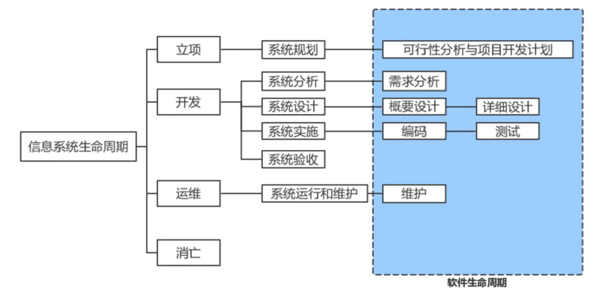
信息系统开发方法
信息化系统的开发方法（掌握）
- 结构化开发方法
- 面向对象方法
- 原型化方法
- 面向服务的开发方法
结构化开发方法（掌握）
精髓：自顶而下，逐步求精和模块化设计
特点：
- 开发目标清晰化
- 开发工作阶段化
- 开发文档规范化
- 设计方法机构化
局限
- 开发周期较长
- 难以适应需求变化
- 很少考虑数据结构
面向对象方法（掌握）
面向对象(OO)方法认为，客观世界是由各种对象组成的(一切皆对象)。与结构化方法类似，OO方法也划分阶段，但其中的系统分析、系统设计和系统实现三个阶段之间已经没有"缝隙”，也就是说，这三个阶段的界限变得不明确。
当前， 一些些大型信息系统的开发，通常是将结构化方法和OO方法结合起来，首先，使用结构化方法进行自顶向下的整体划分; 然后，自底向上地采用OO方法进行开发。
原型化方法（了解）
原型化方法也称为快速原型法，或者简称原型法。它是一种根据用户初步需求，利用系统开发工具，快速地建立一个系统模型展示给用户，在此基础上与用户交流，最终实现用户需求的信息系统快速的开发方法。
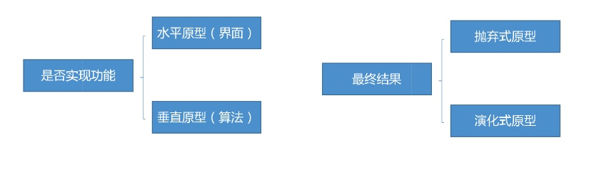
原型法特点（掌握）
1、原型法可以使系统开发的周期缩短，成本和风险降低，速度加快，获得较高的综合开发效益。
2、原型法是以用户为中心来开发系统，用户参与的程度大大提高，开发的系统符合用户的需求，因而增加用户的满意度，提高了系统开发的成功率。
3、由于用户参与了系统开发的全过程，对系统的功能和结构容易理解和接受，有利于系统的移交，有利于系统的运行与维护。
但是，作为一个种开发方法，原型法也不是万能的，它有不足之处，主要体现在以下两个方面:
1、开发环境要求高
2、管理水平要求高
原型法的优点主要在于能更有效地确认用户需求。从直观上来看，原型法适用于那些需求不明确的系统开发。事实上，对于分析层面难度大，技术层面难度不大的系统，适合于原型法开发;而对于技术层面的困难远大于其分析层面的系统，则不宜用原型法。
面向服务的开发方法（掌握）
进一步将接口的定义与实现进行解耦，则催生了服务和面向服务( Service-Oriented，SO)的开发方法
提高系统可复用性、信息资源共享和系统之间的互操作性，成为影响信息化建设效率的关键问题，而SO的思维方式恰好满足了这种需求。
常规信息系统集成技术
OSI七层网络模型（掌握）
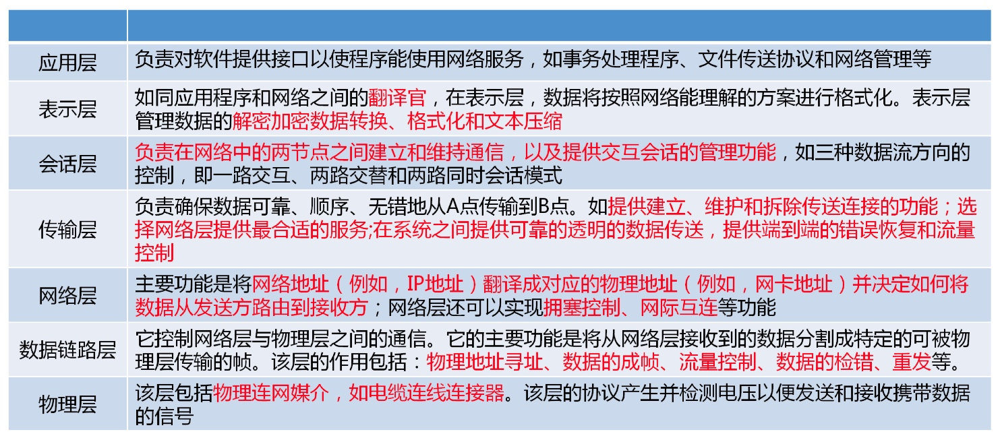
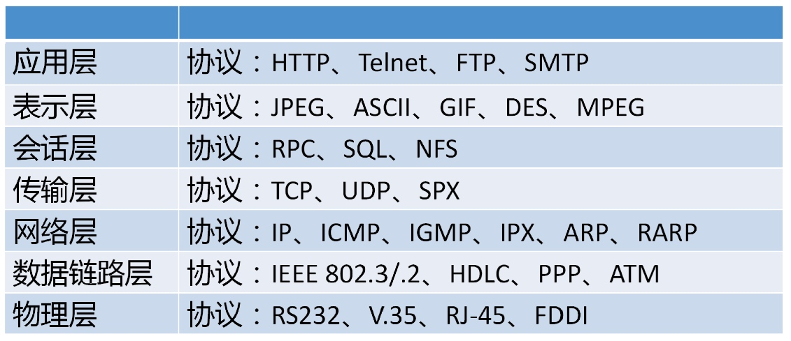
IEEE802规范（掌握）
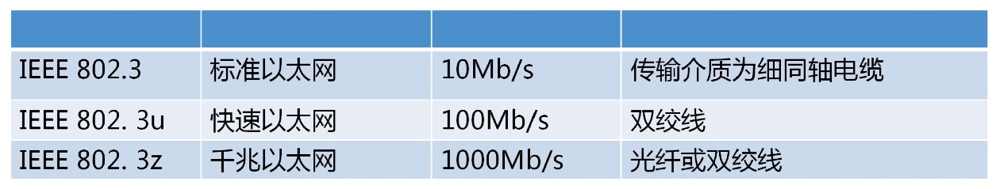
- IEEE 802.3以太网的CSMA/CD载波监听多路访问/冲突检测协议 有线局域网协议
- IEEE 802.11无线局域网协议
应用层协议（掌握）
应用层协议，这些协议主要有FTP、TFTP、HTTP、 SMTP、DHCP、 Telnet、 DNS和SNMP等。
① FTP (文件传输协议)运行在TCP之上。FTP在客户机和服务器之间建立两条TCP连接-条用于传送控制信息(使用21号端口)，另- -条用于传送文件.内容(使用20号端口)
② TFTP (简单文件传输协议)， 建立在UDP之上，提供不可靠的数据传输服，务使用场景:局域网内向嵌入式设备上传文件
③ HTTP (超文本传输协议)用于从WWW服务器传输超文本到本地浏览器的传输协议。
④ SMTP (简单邮件传输协议)建立在TCP之上，是一种提供可靠且有效的电子邮件传输的
⑤ DHCP (动态主机配置协议)建立在UDP之上，实现自动分配IP地址
⑥ Telnet (远程登录协议)是登录和仿真程序，建立在TCP之上，他的基础功能是允许用户登录进入远程计算机系统
⑦ DNS (域名系统)，是实现域名解析，建立在UDP之上。
⑧ SNMP (简单网络管理协议)， 由一组网络管理的标准组成，包含一个应用层协议( application layer protocol )、数据库模型( database schema )和一组资源对象。 该协议能够支持网络管理系统，用以监测连接到网络上的设备是否有任何弓|起管理上关注的情况。
传输层协议（掌握）
传输层主要有两个传输协议，分别是TCP和UDP，这两个协议负责提供流量控制，错误校验和排序服务。
① TCP提供了一个可靠的， 面向连接的，全双工的数据传输服务。TCP一般用于传输数据量比较少，且对可靠性要求高的场合。
② UDP是一种不可靠的，无连接的协议，可以保证应用程序进程间的通信，与TCP相比， UDP是一种无连接，它的错误检测功能要弱得多， UDP协议一般用于传输数据量大，对可靠性要求不是很高，但要求速度快的场合。
网络层协议（掌握）
网络层中的协议主要有IP、ICMP、 IGMP、 ARP、和RARP等
① IP，所提供的服务是无连接和不可靠的。
② ICMP ( Internet Control Message Protocol，网络控制报文协议)， 一种专门用于发送错报文的协议，即传送的数据可能丢失、重复、 延迟、或乱序传递，所以需要- -种尽量避免差错并能发生差错时报告的机制，这就是ICMP的功能。
③ IGMP ( Internet Group Managerment Protocol，网际组管理协议)允许Internet中的计算机参加多播，是计算机用做向相邻多路由器报告多目组成员的协议。
④ ARP ( Address Resolution Protocol，地址解析协议)用于动态地完成IP到物理地址的转换。
⑤ RARP ( Reverse Address Resolution Protocol，反向地址解析协议)用于动态完成物理地址向IP地址的转换。
网络设备（了解）
按照交换层次的不同，网络交互可以分为物理层交互(如电话网)、链路层交互(二次交换、对MAC地址进行变更)、网络层交换(三层交换，对IP地址进行变更)、传输层交换(四层交换，对端口进行变更，比较少见)和应用层交换。
网络互联设备中有中继器(实现物理层协议转换，在电缆间转换二进制信号)，网桥(实现物理层和数据链路层协议转换)，路由器(实现网络层协和以下各层协议的转换)、网关(提供从最底层到传输层或以上各层的协议转换)和交换机。
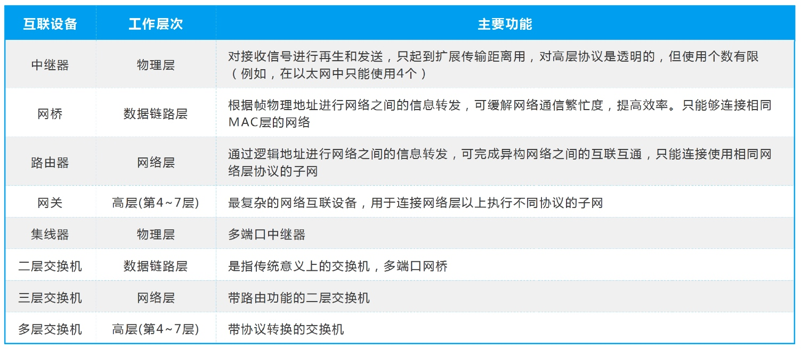
网络存储技术（掌握）
主流的网络存储技术主要有三种，分别是:
直接DAS(Direct Attached Storage，DAS)存储
设备通过SCSI电缆连接到服务器。
网络附加存储(Network Attached Storage，NAS)存储
通过网络接口与网络直接相连，用户通过网络访问，支持即插即用
NAS技术支持多种TCP/IP网络协议，主要是NFS(网络文件存储系统) 和 CIFS(通用Internet文件) 来进行文件访问。
存储区域网络(Storage Area Network，SAN)
SAN是通过专用交换机将磁盘阵列与服务器连接起来的高速专用子网，它没有采用文件共享存取方式，而是采用块( block )级别存储根据数据传输过程采用的协议，其技术划分为FC SAN、IP SAN、IB SAN
SAN根据数据传输过程采用的协议，其技术划分为FC SAN、IP SAN、IB SAN
- FC SAN，光纤通道的主要特性有:热插拔性、高速带宽、远程连接、连接数量大。
- IP SAN，基于IP网络实现数据块级别存储方式的的存储网络。
- IB SAN，是一种交换结构I/O技术，其设计思路是通过一套中心机构在远程存储器、网络以及服务器等设备之间建立一个单一的连接链路，并由IB交换机来指挥流量。
网络接入技术（了解）
目前，接入Internet的主要方式有两大类别，即有线接入与无线接入。
- 有线的接入方式PSTN、ISDN、ADSL、FTTX+LAN、 HFC等
- 无线接入GPRS、3G和4 G接入等
- 无线网络是指以无线电波作为信息传输媒介。目前最常用的无线网络接入技术主要有WIFI和4G。
- 5G速率10Gbps
网路的规划与设计（掌握）
核心层主要目的通过高速的转发通信，提供优化，可靠的骨干传输结构，因此核心层交换机应拥有更高的可靠性，性能和吞吐量。
汇聚层是核心层与接入层的分界面，完成网络访问策略控制，数据包处理、过滤、寻址、以及其他的数据处理任务。
网络中直接面向用户连接或访问网络的部分成为接入层，接入层的目的是允许终端用户连接到网络，因此，接入层交换机(或路由器)具有低成本和高密度特性。
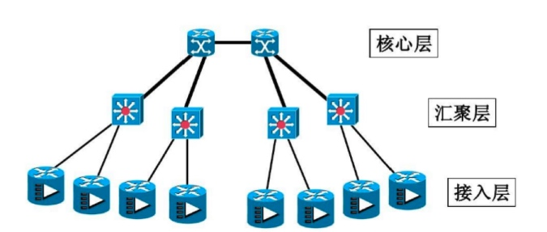
网络安全设计:信息安全的基本要素如下:
① 机密性:确保信息不暴露给未授权的实体或进程。
② 完整性:只有得到允许的人才能修改数据，并且能够判别出数据是否己被篡改。
③ 可用性:得到授权的实体在需要时可访问数据，即攻击者不能占用所有资源而阻碍授权者工作。
④ 可控性:可以控制授权范围内的信息流向及行为方式。
⑤ 可审查性:对出现的网络安全问题提供调查的依据和手段。
数据库（了解）
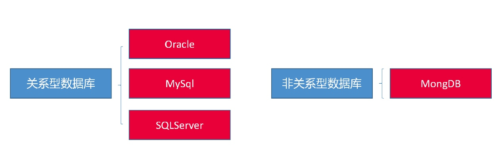
数据仓库（掌握）
数据仓库是一个面向主题的，集成的，非易失的，且随时间变化的数据集合，用于支持管理决策。
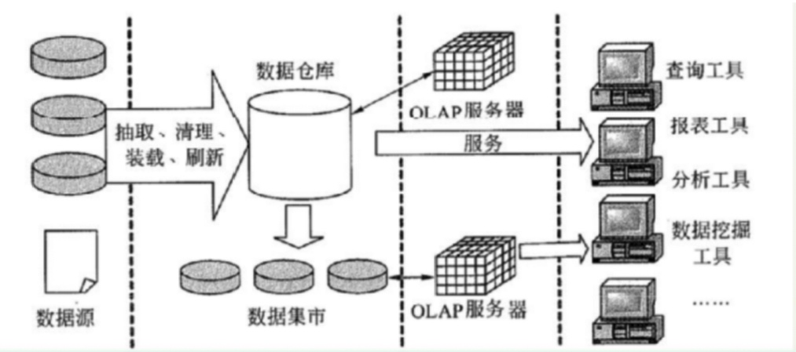
- 数据源:是数据仓库系统的基础，是整个系统数据源泉。
- 数据的存储与管理:是整个系统数据仓库系统的核心。
- OLAP(联机分析处理)服务器:对分析需要的数据进行有效集成，按多维模型予以组织，以便进行多角度、多层次的分析，并发现趋势。
- 前端工具:主要包括各种查询工具，报表工具，分析工具，数据挖掘工具以及各种基于数据仓库或数据集的应用开发I具。其中数据分析工具主要针对OLAP ，报表工具，数据挖掘工具主要针对数据仓库。
中间件定义（了解）
一个分布式系统环境中处于操作系统与应用之间的软件。
中间件是一个独立的系统软件或服务程序，分布式应用软件借助这种软件在不同的技术之间共享资源。中间件位于客户机服务的操作系统之上，管理计算机资源和网络通信。
中间件分类有很多方式和很多种类型。从底向.上从中间件的层次来划分可分为底层型中间件、通用型中间件和集成型中间件三个大的层次。
1、底层型中间件的主流技术有JVM(Java虚拟机)、CLR(公共语言运行库)、ACE(自适配通信环境)、JDBC(Java 数据库连接)和ODBC(开发数据库互连)等，代表产品主要有SUN JVM和Microsoft CLR等。
2、通用型中间件的主流技术有CORBA(公共对象请求代理体系结构)、J2EE、MOM(面向消 息的中间件)和COM等，代表产品主要有IONAOrbk、BEAWebLogic和IBM MQSeries等。
3、集成型中间件的主流技术有WorkFlow和EAI(企业应用集成)等，代表作品主要有BEA WebLogic和IBM WebSphere等。
中间件应用（掌握）
为了完成不同层次的集成,可以采用不同的技术、产品
1、为了完成系统底层传输层集成,可采用CORBA技术。
2、为了完成不同系统的信息传递,可以采用消息中间件产品。
3、为了完成不同硬件和操作系统的集成;可以采用J2EE中间件产品。
可用性和可靠性（了解）
可用性:系统能够正常运行的时间比例,经常用两次故障之间的时间长度或在出现故障时系统能够恢复正常的速度来表示。
可靠性:软件系统在应用或系统错误面前,在意外或错误使用的情况下维持软件系统的功能特性的基本能力。
可用性度量:无故障时间/ (无故障时间+故障恢复时间) * 100%。所以,提高一个系统的可用性,要么提升系统的单次正常工作时长,要么减少故障修复时间,常用的可用性战术如下:
1、错误检测:用于错误检测的战术包括命令/响应、心跳和异常。
2、错误恢复:用于错误恢复的战术包括表决、主动冗余、被动冗余。
3、错误预防:用于错误防范的战术把可能出错的组件从服务中删除,弓|入进程监控器。